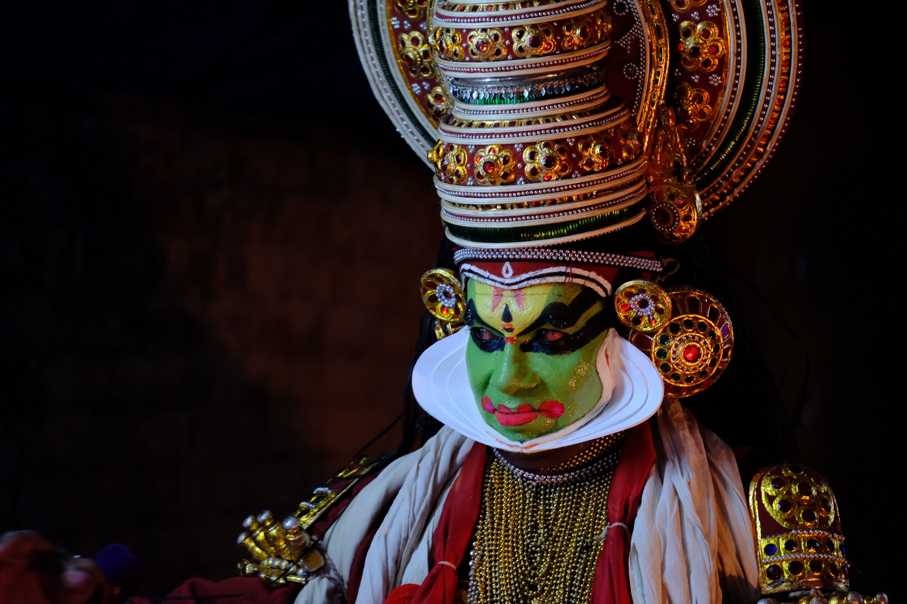

Kathakali
‘Kathakali’, an important genre in the Indian classical dance form, is associated with storytelling form of this art.

Mohini attam
mohini attam, (Malayalam: “dance of the enchantress”) also spelled mohiniattam or mohiniyattam, semiclassical dance form from the state of Kerala.

Indian artforms
A country as diverse as India is symbolized by the plurality of its culture. India has one of the world's largest collections of songs, music, dance, theatre, folk traditions, performing arts, rites and rituals, paintings and writings that are known, as the 'Intangible Cultural Heritage' (ICH) of humanity.